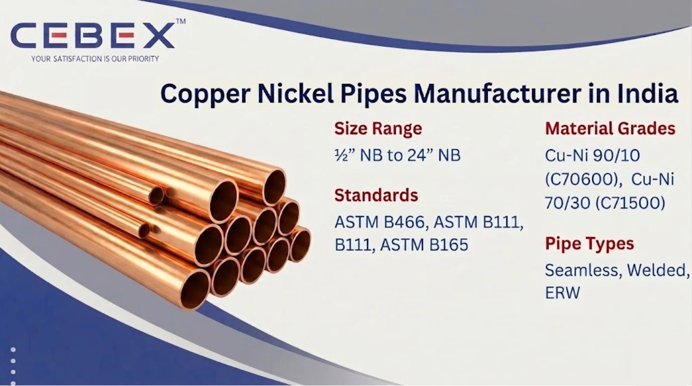

Leading Manufacturer & Exporter of Cu-Ni 90/10 & 70/30 Pipes
In critical marine, offshore, and heat exchange applications, material selection directly impacts performance, longevity, and safety. As a leading Copper Nickel Pipe Manufacturer in India, CEBEX STEEL INDIA specializes in delivering high-performance Cu-Ni alloy pipes engineered for superior corrosion resistance, biofouling resistance, and long-term durability in seawater environments.
Copper Nickel (Cu-Ni) alloys, primarily 90/10 and 70/30 compositions, are widely recognized for their exceptional resistance to seawater corrosion, stress corrosion cracking, and erosion. These properties make Copper Nickel pipes the preferred choice for shipbuilding, desalination plants, offshore platforms, and condenser systems.
Our manufacturing facility integrates advanced extrusion, cold working, and finishing technologies to produce dimensionally precise, metallurgically consistent, and application-ready Copper Nickel pipes compliant with global standards.

Selecting a reliable Copper Nickel Pipe Manufacturer in India ensures long-term operational efficiency and reduced maintenance costs. CEBEX STEEL INDIA offers a combination of technical expertise, certified manufacturing, and global export capability.
We manufacture pipes in accordance with ASTM B466, ASTM B111, ASTM B165, and equivalent ASME standards. Every pipe undergoes rigorous testing including PMI (Positive Material Identification), hydrostatic testing, eddy current testing, flattening tests, and mechanical validation.
We maintain complete traceability from raw material to finished product with EN 10204 3.1 / 3.2 certification, ensuring compliance with EPC and international project requirements. Our export logistics team ensures safe packaging, timely delivery, and full documentation support.
| Feature | Specification / Detail |
|---|---|
| Product Type | Copper Nickel Pipes |
| Material Grades | Cu-Ni 90/10 (C70600), Cu-Ni 70/30 (C71500) |
| Standards | ASTM B466, ASTM B111, ASTM B165 |
| Pipe Types | Seamless, Welded, ERW |
| Size Range | –" NB to 24" NB |
| Schedules | SCH 5 to SCH XXS |
| Surface Finish | Annealed, Pickled, Polished |
| Form | Round, Square, Rectangular (Custom) |
These pipes are designed for high corrosion resistance, anti-biofouling properties, and excellent thermal conductivity, making them ideal for harsh marine environments.
Our product range includes seamless Copper Nickel pipes for high-pressure applications and welded pipes for large-diameter systems. Seamless pipes are preferred in critical systems such as condensers and heat exchangers, while welded pipes provide cost-effective solutions for structural and fluid transfer applications.
We also manufacture custom Copper Nickel pipes based on project-specific requirements including tight tolerances, special coatings, and custom lengths.
We supply Copper Nickel Pipes in Cu-Ni 90/10 and Cu-Ni 70/30 grades.
| Grade | UNS Number | Common Name | Typical Applications |
|---|---|---|---|
| Cu-Ni 90/10 | C70600 | Copper Nickel 90/10 | Seawater piping, condensers, shipbuilding |
| Cu-Ni 70/30 | C71500 | Copper Nickel 70/30 | Offshore, desalination, power plants |
| Category | Standards |
|---|---|
| Pipe Standards | ASTM B466, ASTM B111 |
| ASME Standards | ASME SB466, SB111 |
| International Standards | EN, DIN, ISO |
The performance and durability of Copper Nickel Pipes largely depend on their precise chemical composition and mechanical strength. All Copper Nickel Pipes are manufactured using controlled alloying elements to ensure corrosion resistance, strength, and long-term reliability in demanding marine environments. Each batch is tested and certified to meet ASTM and international standards.
| Grade | Cu | Ni | Fe | Mn |
|---|---|---|---|---|
| C70600 | Balance | 9–11 | 1.0–1.8 | 1.0 max |
| C71500 | Balance | 29–33 | 0.4–1.0 | 1.0 max |
| Grade | Tensile Strength (MPa) | Yield Strength (MPa) | Elongation | Hardness |
|---|---|---|---|---|
| C70600 | 275 | 105 | 30% | 80 HRB |
| C71500 | 360 | 125 | 30% | 90 HRB |
Copper Nickel alloys provide excellent ductility, thermal stability, and resistance to stress corrosion cracking.
We manufacture Copper Nickel Pipes from –" NB to 24" NB with multiple wall thickness options.
| Size (NB) | OD (mm) | Thickness (mm) | Weight (kg/m) |
|---|---|---|---|
| –" | 21.3 | 2.77 | 1.27 |
| 1" | 33.4 | 3.38 | 2.68 |
| 2" | 60.3 | 3.91 | 5.44 |
| 4" | 114.3 | 6.02 | 15.32 |
| 8" | 219.1 | 8.18 | 43.39 |
Custom dimensions and schedules are available as per project specifications.
Copper Nickel pipes are extensively used in industries where seawater corrosion resistance and thermal conductivity are critical.
They are widely applied in marine piping systems, offshore oil & gas platforms, desalination plants, power plant condensers, shipbuilding, and heat exchanger systems. Their natural resistance to biofouling reduces maintenance and improves operational efficiency.
Each Copper Nickel pipe undergoes strict quality checks including PMI testing, eddy current testing, hydrostatic testing, ultrasonic inspection, and mechanical testing. We ensure compliance with international codes and project specifications.
All products are supplied with EN 10204 3.1 / 3.2 Mill Test Certificates, ensuring full traceability and quality assurance.
Our Copper Nickel pipes are packed using export-grade wooden cases, bundles, and protective wrapping to prevent transit damage. Each pipe is clearly marked with grade, size, and heat number.
We provide complete export documentation including invoice, packing list, test certificates, and certificate of origin, ensuring smooth global delivery.
As a trusted Copper Nickel Pipe Manufacturer in India, we supply pipes to major projects across Africa. Our export team ensures compliance with regional standards and smooth delivery to countries such as Nigeria, Egypt, Kenya, South Africa, and Ethiopia.
In addition to Copper Nickel Pipes, we also manufacture and export Duplex Stainless Steel Pipes , Super Duplex Pipes , Titanium Pipes , Stainless Steel Pipes , and Nickel Alloy Pipes . These high-performance pipes are engineered for extreme environments where superior corrosion resistance, high strength, and long-term reliability are critical.
We also supply:
CEBEX STEEL INDIA stands for quality consistency, technical expertise, and global reliability. We offer competitive pricing, fast delivery, and complete engineering support for industrial piping solutions.
Cu-Ni 90/10 pipes contain 10% nickel and are widely used for general seawater applications, while Cu-Ni 70/30 pipes offer higher nickel content, providing superior strength and corrosion resistance for more aggressive marine and offshore environments.
Yes, Copper Nickel pipes are specifically designed for seawater service due to their excellent resistance to corrosion, biofouling, and erosion in marine environments.
Our pipes comply with ASTM B466, ASTM B111, ASME SB466, and international standards such as EN and DIN, ensuring global project compatibility.
Yes, all pipes are supplied with EN 10204 3.1 / 3.2 Mill Test Certificates along with inspection and testing reports.
Yes, we manufacture custom pipes based on project drawings, including special sizes, wall thicknesses, and finishing requirements.
These pipes are widely used in marine, offshore, desalination, power generation, and heat exchanger applications due to their corrosion resistance and durability.